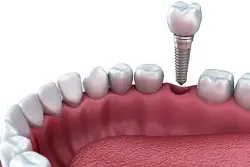
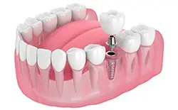
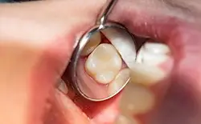
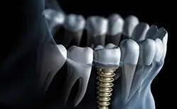

A lot of people don’t expect to lose their teeth, but when it happens, you need to act quickly. If the empty space is left alone, your remaining teeth could drift and cause painful alignment issues; your jawbone could start to weaken and deteriorate as well. While you have many tooth replacement options, none compare to dental implants in Texarkana. This revolution tooth loss solution can help you permanently rebuild a confident, comfortable smile. Read on to learn more about dental implants and give us a call today to see if they’re right for you!
Why Choose Pleasant Grove Family Dentistry For Dental Implants?
- #1 High-Quality Materials for Beautiful, Long-Lasting Results
- #2 Can Replace Any Number of Missing Teeth
- #3 Unmatched Comfort, Functionality, and Longevity
What Are Dental Implants?

Dental implants are one option for replacing the entire structure of the missing tooth, including the roots as well as the crown. A small, biocompatible titanium post is inserted into the jawbone to anchor your new teeth in place just like natural tooth roots. A small connector piece called an abutment on top of it securely fastens the final restoration in place, which could be a custom-made dental crown, bridge, or denture. The end result is a stable and comfortable restoration that lets you eat, speak, and smile just as well as you could with your natural teeth.
4 Step Dental Implant Process
Some general dentists do not offer specialize care in dental implants and need to refer patients to specialists for implant treatment. We make it easy by keeping you with the team you already know and trust. Our skilled dentists can perform every step right here in our Texarkana office. Although everyone’s implant journey may be a little unique depending on your needs, we follow the same general process, which can take several months to over a year. Whether you’re replacing one missing tooth or an entire arch, we’ll go through the same four steps to ensure success. Read on to learn how dental implants work in Texarkana.
Read more
Initial Dental Implant Consultation
Before we can think about actually performing any work, we need to meet with you one-on-one. Not only can we discuss your needs and goals, but this appointment gives us the chance to confirm that you’re a good candidate for the procedure. We’ll examine your jawbone and oral cavity to confirm that both are healthy enough to move forward. If there are any impediments (e.g., gum disease or weak jawbone density), we can resolve the issue before so that you have the best chances for successful implants.
Dental Implant Surgery
The thought of surgery may feel intimidating at first, but the implant placement procedure is considered minor surgery. We’ll make sure you’re completely numb and comfortable and then make a small incision in the gum tissue to have direct access to the jawbone. We’ll position the implant post in the bone at precision spots and angles, optimizing your implants for restorations later on. Finally, we’ll close the gums back up and put a protective cap over the site.
Dental Implant Osseointegration & Abutment

After the placement procedure, you’ll have to wait for your body to recover and respond to the implant. The jawbone actually grows and bonds to the implant in a process called osseointegration. This essential stage may take three to six months to complete, but at that point, we can then do a smaller surgery. This time, we’ll attach the abutment or connector piece, which makes it possible for us to create and fasten your custom restoration.
Delivery of Dental Restoration(s)

Your restoration, whether a crown, bridge, or denture, is the only visible portion of your replacement teeth. When your abutments have been placed, we can then take impressions of your teeth and have your restoration customized. Most often made of porcelain or other materials that look realistic, these restorations are fabricated at a trusted dental lab and then sent to us to affix to your implants. At this point, you’re free to enjoy your new teeth! Just be sure to continue taking care of them with daily brushing and flossing and regular checkups here at Pleasant Grove Family Dentistry.
Benefits of Dental Implants
When it comes to understanding the benefits of dental implants in Texarkana, you must break them down into different categories. Not only will you find that your overall health will improve, but the way you live your life, and the long-term results will leave you feeling happier for choosing dental implants in the first place. While there are plenty of other tooth replacement solutions, none can deliver the same high-quality results as implants. From the chance to embrace new opportunities to enjoying all your favorite foods because of an improved bite force, you’ll soon discover the many advantages that come with dental implants.
Read more
Lifestyle Benefits
- You will regain the ability to eat all the foods you truly love, even those that are hard in texture. Denture-wearers will often find these foods to pose a serious problem because of the unevenness and instability of the prosthetic; however, with implants, you will have an increased bite force and chewing power, making eating an enjoyable experience again.
- You’ll also be free to consume your favorite hot beverages, as you will not have to worry about the temperature warping your implants (like it would the acrylic of dentures).
- You will enjoy greater self-esteem, allowing you to feel more confident when surrounded by friends, family, and colleagues.
- You’ll embrace a better quality of life that encourages you to embrace new opportunities and social gatherings, unlike denture-wearers who often feel self-conscious even with a new prosthetic.
- Your dental implants will never slip or fall out of place because of their surgical placement within your jawbone. This is vastly different than dentures, as they only sit on top of the gums and require your natural suction to hold them in place (as well as denture adhesive).
Health Benefits
- Facial collapse is a potential problem for denture wearers and those with fixed bridges because there is nothing to stimulate the jawbone. However, with dental implants in Texarkana, you do not need to worry, as the post mimics the natural tooth root, continuing to stimulate the bone each time you chew or bite down.
- You will lower your risk for common health problems like osteoporosis (bone deterioration), cardiovascular disease, and diabetes by replacing your missing teeth with dental implants.
- You can enjoy a prosthetic and restoration that is easy to clean and maintain, requiring no special cleaning solutions or products. Not to mention, this ease of care allows for improved oral health.
Long-Term Benefits
- Depending on your implant dentist in Texarkana, you can expect your implant placement success rate to be around 98%.
- After 10 years, with proper care, the success rate for implants typically falls between 90 and 95%.
- You will save lots of money by not having to buy denture adhesives, spend money on relining or replacing your prosthetic (unlike dentures), or buying special cleaners for your new teeth.
- You can enjoy your implants for a lifetime as long as you commit to taking proper care of them. They are designed to remain firmly in place and never need replacing.
Who Dental Implants Can Help
Dental implants are widely regarded as the gold standard of tooth replacement, and practically anyone with missing teeth can benefit from them! There are several different types we can use to help you rebuild your smile depending on the extent of your tooth loss. However, we’ll first need to check to make sure that dental implants are a good choice for you. Once you complete any necessary preliminary treatments, we can move on with your tooth replacement.
Read more
Who Is a Good Candidate for Dental Implants?
Generally, if you’re missing any number of teeth, dental implants might be just the treatment you need to get your smile back on the right track. However, your oral health must be adequate. If you’re a smoker or you don’t practice good enough oral hygiene, your dental implants might fail down the line. Additionally, you must have enough jawbone density to support your implants. If you don’t, you must be able and willing to undergo a bone grafting procedure to strengthen your jawbone. This treatment will add a few months of waiting to your implant journey, but it will be worth it to have the support for a natural-looking and -feeling smile that stands the test of time.
Once you’re ready for your brand-new smile, we’ll help you pick the type of dental implant that’s right for you. Dental implants can be used to replace a single tooth or multiple teeth; they can even be used in cases of complete tooth loss. What changes is the number of posts used and the type of prosthetic they support.
Missing 1 Tooth
It goes without saying that one dental implant can replace one tooth. After healing from the surgery, you’ll receive a crown that’s placed on top of the implant. The crown will be all-ceramic, meaning it’ll look natural in your mouth even after years of wear and tear.
Missing Multiple Teeth
If two teeth in a row or missing, they can be replaced by a couple of crowns fused together and attached to a single implant. For three or four teeth, however, you’ll likely need to get a dental bridge, which is a series of crowns supported by two implant posts. Traditional bridges use adjacent teeth for support, but by using implants instead, you can preserve tooth enamel.
Missing All Teeth
If a full arch is gone, you’ll need dentures to chew and talk normally. The number of implant posts you’ll need to support your false teeth will vary, but in many cases, it can be done with as few as four. Dentures that are secured in place by implants won’t slip, and you won’t have to worry about them becoming ill-fitting due to bone loss.
Understanding the Cost of Dental Implants
At Pleasant Grove Family Dentistry, we believe that the benefits of smile restoration with dental implants far outweigh the costs. They have the potential to improve your smile, health, and confidence in ways that dentures and dental bridges can’t. While they might cost more up front than these other options, they can be more cost-effective over the long term. Unlike traditional dentures that need to be replaced every 10 years or so, dental implants last for decades with the right maintenance.
Read more
Preliminary Treatments & Dental Implant Surgery

In some cases, we need to address a pressing need before we begin the implant process. For instance, if you require a bone graft or gum disease therapy, these preliminary procedures will incur separate costs in addition to implant treatment. During your consultation, we can give you a breakdown of the costs associated with the entire process, including any preliminary work. Keep in mind that if we need to refer you to a specialist, their bill will remain separate from ours.
The Parts of Your Dental Implant
Many factors go into calculating the cost of your implant treatment. First, it depends on how many implants you’re getting; note that we didn’t say how many teeth you’re missing. In many cases, we are able to save on costs by replacing multiple teeth with as few implants as possible. The price may also vary depending on the brand used. Just like cars or phones, the brand, model, and size can play a role in the total cost.
Final Dental Implant Restoration
An important contributor to the price you’ll pay is the restoration that will be attached to your implants. Obviously, the larger the restoration, the higher the cost. It makes sense that one crown would cost less than a bridge, and a bridge less than a full denture. Regardless of your needs, we’ll meet your smile’s unique needs and be transparent about the cost of your restorations from the beginning.
Does My Dental Insurance Cover Dental Implants?
Although coverage may differ from plan to plan, dental insurance companies generally don’t include dental implants in their benefits. However, certain parts of treatment may be covered, such as the preliminary procedures and restoration. As an experienced team, we’ll closely look through your insurance plan to see if there are ways we can save you on your out-of-pocket costs. With us on your side, you’re sure to maximize your coverage.
Making Dental Implants Affordable
If you’re considering implant supported tooth replacement, contact our dental office in Texarkana to find out more or schedule a dental implant consultation with our caring dentist and dentistry team. We’ll walk you through your treatment options and pricing to help you feel completely confident that you’ve found the ideal tooth replacement option to meet your needs. Then, we can discuss payment options, including financing through CareCredit, a trusted company for medical or dental expenses.
Dental Implants Post-Op Instructions
Whatever you may have thought, the dental implant process doesn’t end when the posts are placed. You’ll next need to recover from your surgery and give your mouth time to heal. Still, no need to worry – Pleasant Grove Family Dentistry will walk you through that phase of treatment. Our team will explain what to expect, typical post-op symptoms, and ways to help your recovery. Please keep reading or call our office for more details on these things.
Read more
What to Do Directly After Dental Implant Surgery
Once our dentists place your dental implant(s), you’ll need to leave your forming blood clot(s) alone. Touching it (or them) will delay or even reverse your recovery. Therefore, try to follow these specific rules:
- For the next few days, don’t touch the surgical site with your fingers or tongue.
- Don’t smoke in the first 24 hours after your surgery.
- Avoid drinking straws for a few days, as their suction force may dislodge the blood clot.
- Rather than spit, swallow your saliva or use a tissue for dabbing.
Common Side Effects When Recovering from Dental Implant Placement
After your dental implants are placed, you may experience some mild side effects for the first three days. Common ones to watch for include:
- General Discomfort – Your treatment site will likely ache once your surgery’s anesthesia wears off. At that point, use store-bought pain relievers to ease your soreness.
- Intermittent Bleeding – Your implant site(s) could bleed slightly soon after placement. Apply some gauze and light pressure to lessen this effect.
- Gum or Facial Swelling – There’s a good chance your gums and face will swell over the first 72 hours post-surgery. To compensate, you can reduce the swelling by applying a cold compress.
For the record, the above effects should be temporary and fade after a few days. Please contact our office if they don’t or if they worsen instead.
Your Diet After Dental Implant Surgery
It’s best to follow a soft food diet after your implant surgery, as tough meals can dislodge your blood clot. Possible items to include in this meal plan are:
- Scrambled Eggs
- Yogurt
- Soft Cheese
- (Non-hot) Soup
- Sweet Potatoes
- Smoothies
- Mashed Potatoes
- Pasta
- Gelatin
- Pudding
- Ice Cream
Once a few weeks have passed (or you’ll feel up to it), you can resume a normal diet. That said, you should limit your intake of overly crunchy or tough foods and avoid chewing on the implant site(s).
Post-Op Health & Oral Hygiene
Your mouth needs daily cleaning even as it heals from surgery, so keep up with oral care even while you recover. Just remember to make the following adjustments to your routine:
- When brushing your teeth twice daily, be careful of the surgical site(s).
- Rinse your mouth after eating 2-3 times daily to keep the treatment site clean. If you have one, consider using a prescription mouthwash.
- Don’t use a mouth rinse that has high levels of alcohol (i.e., Scope, Listerine, etc.)
What to Do After Your New Teeth Are Attached
The hard part of treatment is over when the new crown, bridge, or denture is attached. At that point, you’ll only face some minor gum sensitivity – a symptom that fades quickly. You shouldn’t experience any swelling, bleeding, or extensive recovery. Instead, you can just enjoy your full grin!
Maintaining & Caring for Your Dental Implants
Dental implants can keep your smile healthy and beautiful for a lifetime! However, it is crucial that you are taking steps to care for them properly. If you aren’t protecting your implants from damage and infection, they could fail or need to be replaced. However, a few simple precautions and healthy habits can help you enjoy your newly rebuilt smile for the rest of your life!
Read more
Make Oral Hygiene a Priority
Dental implants are unable to get cavities. However, it’s still important that you practice excellent dental hygiene for a few other reasons. Your surrounding teeth can still because damaged, and issues like gum disease could lead to a dental implant failure! Remember to brush twice, floss, and rinse with mouthwash every day.
Eat a Healthy Diet
With dental implants, you don’t need to cut out foods from your diet. You can enjoy any nutritious food that you want. Just avoid overindulging in things that are very hard, sticky, or sugary. Remember to include foods with plenty of calcium and vitamin C to keep your jawbone strong and your gum tissues healthy!
Break Bad Habits
Indulging in bad dental habits can cause your dental implants to become damaged or fail. Refrain from smoking and chewing tobacco products, and don’t use teeth as tools to complete tasks either. Find scissors, a bottle opener, or another tool to help you complete your task safely.
Protect Your Dental Implants
Your dental implants are very strong, but they aren’t completely indestructible. If you like to get involved in contact sports, it’s a smart idea to wear a sports mouthguard to reduce your risk of experiencing a dental injury. If you grind your teeth at night, you may want to consider investing in a nightguard to prevent your dental implant and other teeth from wear and tear.
Schedule Regular Dental Checkups
You should attend regular cleanings and checkups every six months. If it has been longer than that since your last visit, give us a call to schedule an appointment. This way, we can monitor your dental implants and spot any issues as early as possible. The quicker a problem is discovered, the more likely it can be resolved.
Dental Implant FAQs
Are you still a bit unsure of whether you want to get your missing teeth replaced with dental implants in Texarkana? Don’t worry, it’s perfectly normal to be a bit apprehensive. After all, dental implants are a huge investment in the future of your smile. Ultimately, though, they end up being well worth it. To help you make the decision of whether you want implants or not, we’ve decided to answer some of the implant questions that we get asked the most often.
Read more
What Happens If I Don’t Replace a Missing Tooth?
When you no longer have a tooth root stimulating your jawbone through chewing, the bone begins to deteriorate. As a result, your facial muscles are no longer as properly supported as they once were, and they start to droop and prematurely wrinkles, making you appear older than you actually are. Dental implants are the only tooth replacement method that provides your jawbone with the stimulation it needs to keep your face looking young.
Can Dental Implants Replace Front Teeth?
Absolutely! While it’s more common to be missing back teeth, or molars, than those in the front of the mouth, you can certainly replace teeth with dental implants no matter where they’re located. We will custom make your dental crown or bridge to ensure that your new teeth blend in seamlessly with the rest of your smile.
Are Dental Implants Easy to Maintain?
All that you have to do to take care of your implants is brush and floss around your restoration every day and visit us for a checkup and cleaning every six months. At these appointments, we can make sure your implants are still in good condition. If there is a problem with one of your implants, regular checkups help us diagnose it early enough that treatment is still relatively easy.
Can Dental Implants Improve My Oral Health?
By filling the space of empty teeth, it provides any remaining natural teeth with the support they need to stay in place. This prevents them from moving out of position, making them easier to clean. This reduces your risk for tooth decay and gum disease.
Can Dental Implants Fail?
Dental implants can fail; however, the risk is minimal as they have over a 95% success rate. To reduce your risk for late-term failure, it is important to maintain your oral hygiene and regular appointments with your dentist.